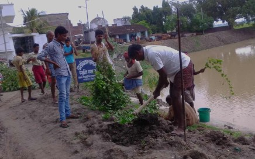
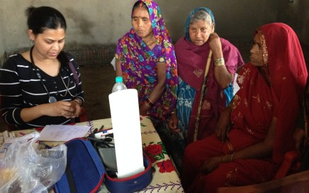
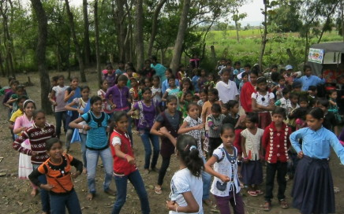
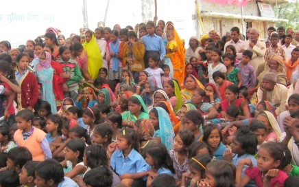
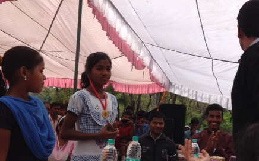

Environmental Initiatives
Tree plantation drive is a major initiative promoted through NANAK whereby children, youth and community leaders in and around Majhui Village have been encouraged to plant and protect trees. A dedicated area has been created into a Children's park with support from the community. Tree plantation has also been undertaken alongside the local pond, and an emphasis has been placed on preserving the cleanliness of the ponds in our Awareness Generation programs.

Sanitation Initiatives
A major breakthrough in sanitation has been convincing community members in and around Majhui to participate in the government programme of building toilets under the Nirmal Bharat Abhiyan. In a rare interaction organized by the NANAK team at Majhui Village between the DDC of Sasaram and the villagers, a commitment was taken to sanction 100 toilets within 3 months. The Gram Pradhan and families were convinced to extend full support with a goal of making the area open defecation free.
Health Initiatives
While awareness building on health, hygiene and nutrition is an ongoing effort, camps are organized where specialist doctors in Eye care, Gynecologists, Pediatricians etc. are invited to the village from Delhi and other parts of Bihar. In the past, Help-age India and the Lions Club have also extended great support and reached out to the hitherto unreached populace of Majhui Village in Rohtas, Bihar.


Self Defense Training
Women and girls are imparted self defense training by a trained instructor, a black belt in Karate staying in Majhui Village as part of the NANAK team, with a view to give them self confidence, and tools for protecting themselves in any unwarranted circumstances. The program has been unique in the regard that it has also involved the local SHO (Police) to interact with the children and youth of the area and give them tips on enhancing safety and self protection.
Awareness Generation Programmes
Awareness generation programmes for women and children have been taken up on a regular basis. In order to instill a sense of social responsiveness, children are encouraged to collectively take up social issues such as campaigns against child marriage, alcoholism and gender discrimination. Women are also given platforms for taking up social issues such as sanitation, hygiene, nutrition, etc. Special days such as teachers day, children’s day, Gandhi jayanti etc are commemorated with special events. For instance on August 15th, 2013, a Prabhat Pheri was organized for the children in the Shivsagar block at Rohtas in which children moved with slogans and placards amongst the local community to bring awareness on various social issues impacting local development. This included awareness on environmental issues, and importance of literacy. Competitions were also organized to incentivize children who expressed orinal and creative ideas on such issues through talks, poems, and paintings.
The women of SHGs are also provided with functional literacy, and sensitized on their legal rights. Exposure visit was also organized in the month of October, 2013 for women SHG members from Rohtas and other functionaries associated with the project interventions at the grass-roots. The team was given opportunity to visit the Gender resource centres in Delhi, canteens managed by women’s groups, other learning centres in Delhi, and Gurgaon, and also visit the national open school to explore linkages . The ten day stay was totally taken care of by the organization in terms of their travel to and fro from the village, boarding, lodging, transport etc.


Sponsoring higher education of meritorious girls from low income families
The organization identifies girls from low income families who need financial support to continue their higher education. These girls are linked to those sponsors who can directly contribute towards their education fee. One such effort recently was to identify 8 girls in the state of Bihar and West Bengal who belong to poor families and are pursuing higher education, and each of them was provided a financial support of Rs 6400/- which was deposited in their account. A list including the name, age and class of each recipient is at annexure A. The field functionaries of NANAK got the accounts of these girls opened thereby opening a new door of financial inclusion for the girls at a young age. Each family had to give a certificate that the girl would not be married before legal age, and that this money would be spent only for the expenditure related to education of the girl child.